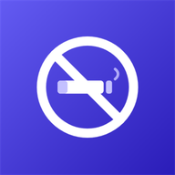

Support
How to get each app up and running, what every screen and option does, and the most common questions.
Android
A light, private file explorer: copy, move, search and share, with no ads.
On Google Play

Android
Your SMS app that also forwards the messages you choose to another number.
On Google Play
Android · Windows · Browser
Your passwords and verification codes, encrypted and yours alone, on your phone and PC.
On Edge Add-ons
Windows
Your remote desktops, SSH terminals and file servers, in tabs and in a single window.
On Microsoft Store

Android · Windows
Check several apps and uninstall them all at once, on your phone and your PC.
On Google Play
Android · Windows
Your tasks on your phone and your computer, with the same account.
On Microsoft Store
Android
Open and read text, logs, JSON and code instantly, with no ads and no accounts.
On Google Play

Android
Record your routes with GPS, snap them to the trails and follow them again.
Download on GitHub

Android · Android Auto
The music on your phone, by artist or composer, with playlists and in the car.
Download on GitHub

Android
Read your PDFs with no ads and no accounts: everything stays on your device.
Download on GitHub

Android
Cut down on smoking little by little: space out your cigarettes and save money.
Download on GitHub
Windows
Your Android phone's screen on Windows, controlled with your mouse and keyboard.
Download on GitHub
Android · Android TV
Spanish free-to-air TV channels live, on your phone, tablet and TV.
Download on GitHub